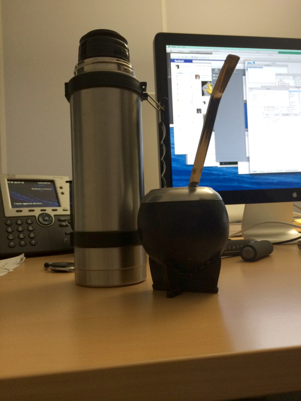

Interview RMoD #2: Esteban Lorenzano
Interview with Esteban Lorenzano RMoD interview
This is the second post of my series of interviews, in which I interview my colleagues of the RMoD team. After the interview of Damien Cassou, I interview Esteban Lorenzano.
Esteban is one of the many argentinians who have been working at Inria. Esteban joined RMoD almost at the same time as I did, two years ago. We since became very good friends, and often meet after work or during weekends, being for a beer somewhere in Lille or an evening sharing a dinner or simply talking, with other colleagues or friends.
We also have a lot in common when it comes to work, and often work together on various projects. We are both passionate about Smalltalk, web development and databases.
Figure 1: Esteban, focused and working hard as always
Hi Esteban, thanks for taking this interview. Can you tell me a bit about yourself and how you joined RMoD?
Well, my name is Esteban Lorenzano and I'm argentinian (one of the many argentinians in the Pharo community). I'm 42 years old and I've spent the biggest part of my life programming, since I saw a Commodore computer in a supermarket, when I was fourteen.
Watching people doing stuff with that computer was like seeing a wizard transforming the world, and that image cached me from that moment and forever. It was not always easy though, and I spent too many years programming in mainstream languages (I like some, I hate others) until I re-discovered my programmer vocation one day that I downloaded a Seaside image, "just to have inspiration and fun, while working on really boring stuff"… and the rest is history: I left my position as a "senior architect" and founded my own company smallworks.eu with two friends to work on Pharo (very new at the moment) and Seaside, and I've been contributing to Pharo since then, in different small projects.
Then for different non work-related reasons, after two years me and my company became just one (my friends needed to switch to other projects) and I was also ending a relationship. Just at the same time Stef and Marcus proposed me to join the RMoD team as a Pharo engineer. It was perfect timing for me, and here I am, in the best job I have ever had.
When I'm not hacking something (at work or at my place), I have also a lot of different interests: I love to read, to write stories, to travel, to learn new stuff: I studied philosophy (yet not finished) and I try to be aware of the problems at my country and the world (and even try to help, when I see that I can do something). Last but not least, I love to spend time just hanging out with my friends.

Figure 2: Esteban's Mate
Damien had a question for the next interview: What would you change in the team to make it even more awesome?
No clue :)
I think as a team we have a lot of stimulus and excitment, but sometimes due the very nature of the team (which in fact is a research team), we have problems to get focus in the engineering part of Pharo: we are so excited about including new stuff or exploring some areas that we lose the need of committing to a task and not stopping until it is finished. If I had to improve something, it would be that part.
You are an Argentinian living in France for 2 years. Can you describe what it is to live in Lille? What does a typical week look like?
I could say that It’s quite challenging, but I would be lying :)
The composition of the team is very international, and because of that the "official language" is english (oh, well… a weird dialect of it, the RMoD-English, which is like a combination of french, spanish, some german and english, everything in all kind of different and strong accents). But what is an advantage at work, and proved to be a problem for day-to-day life: I took too much time learning french (just now I can say I can handle a real conversation), and that prevented me from really knowing Lille until now. So my life here can be splited in two parts: before french and after french.
Before french my week was more or less like this: I wake up (when I wake up… I'm argentinian, which basically means I sleep late and wake up even later) then I go to office (a really nice building in a scientific park) and spend there… well, a lot of time. After that I can go to do some sport, or (more likely) go to down town for a beer or a wine with some of the team, usually Nico, Marcus, Martin, Camillo and Ben (time to time others join, but we are the "regulars"),we even have "our place", a nice café (le café citoyen), very close to the main square.
And well, after french… my life is more or less the same, but I interact a lot more with the locals, which are in general really nice people . And Lille as a city is very nice, with a great cultural life and even some cool night life (but again, as an argentinian I cannot certify that: things begin and end just to early for my regular tastes :)
What question would you ask another member of the team?
Do you want another beer?
Thank you Esteban!
If you liked this interview, you might also want to check out the interview of Damien Cassou.
comments powered by Disqus